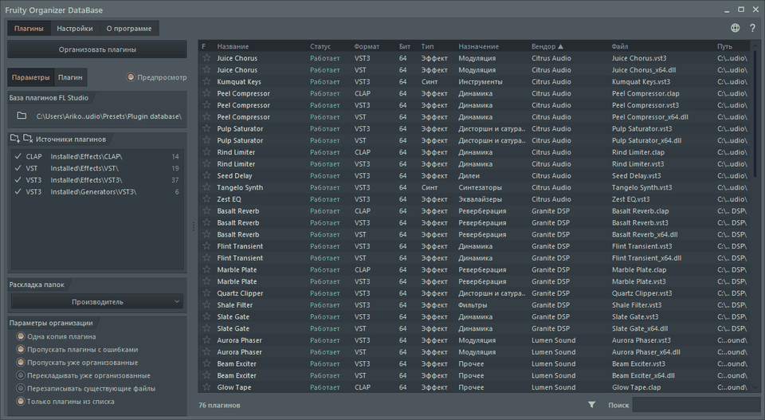

Идеальный порядок в твоей библиотеке.
Портативный органайзер базы плагинов FL Studio. Раскладывает плагины по папкам: по производителю, по назначению или сразу по обоим, а выглядит как родная часть FL Studio.
Скачать FODB.exeBy Arkomiko

Что новогоv1.1.0.0711-a1
- Вкладка «Моды» и моды, которые можно скачать с этого сайта
- Обучение при первом запуске: знак вопроса покажет его снова
- Плавная смена темы и языка и намного более быстрый разделитель панелей
- Новые меню, значки без рамок и скруглённые кнопки, как в оригинале
- Горячие клавиши работают на любой раскладке, действий стало больше
Возможности
- Сортировка по производителю, по назначению или с вложенностью в любом порядке: Производитель\Назначение или Назначение\Производитель
- Определяет, для чего нужен плагин: реверберация, эквалайзер, динамика, синтезатор и ещё 18 назначений
- Фильтры по назначению, производителю, формату, разрядности, статусу, дате файла, размеру и другим признакам
- Подхватывает текущую тему FL Studio на лету
- Автоматические бэкапы, отмена в один клик, ничего не выходит за пределы папки базы
- Один файл на 10 МБ без установки; настройки хранятся рядом с ним
- 26 языков интерфейса и настройки раскладок, клавиш, масштаба, шрифтов, цветов и не только
- Необязательные моды: большой список плагинов, открытый каталог, более тонкие назначения с обучением, дерево предпросмотра и цветные метки. Включаются в разделе «Данные» настроек.
Быстрый старт
- Скачайте FODB.exe и запустите. База плагинов находится автоматически.
- Выберите раскладку папок и включите нужные источники и фильтры.
- Нажмите «Организовать плагины», проверьте предпросмотр и обновите браузер плагинов в FL Studio.